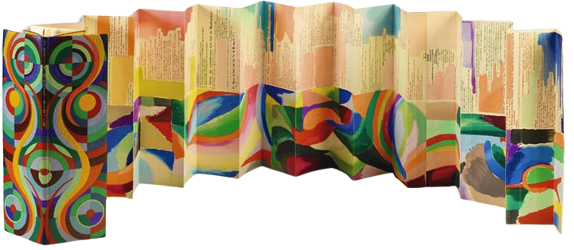

L’esthétique de ce poème est très particulier. D’un point de vu sentimentale,
il y a une harmonie entre la violence de la guerre Russo-Japonaise,
que l’on aperçois au travers des soldats morts, blessés, ou fous ; qui apparaissent à de multiple reprises.
Et la mélancolie qui est présente tout au long de se voyage.
Du point de vu littéraire,
Cendrars saccades les vers de sont poème et joue entre des vers longs et des vers courts,
ceci récréer l’intensité et le rythme du voyage en train.
Enfin, du point de vu visuel, Cendrars demande au peintre Sonia Delaunay de mettre en forme son poème.
Celle-ci fera un accordéon en papier mêlant de la peinture et le texte.

Tout cela bouscule les codes, et à l’instar de Baudelaire, Blaise Cendrars est un poète de la modernité.